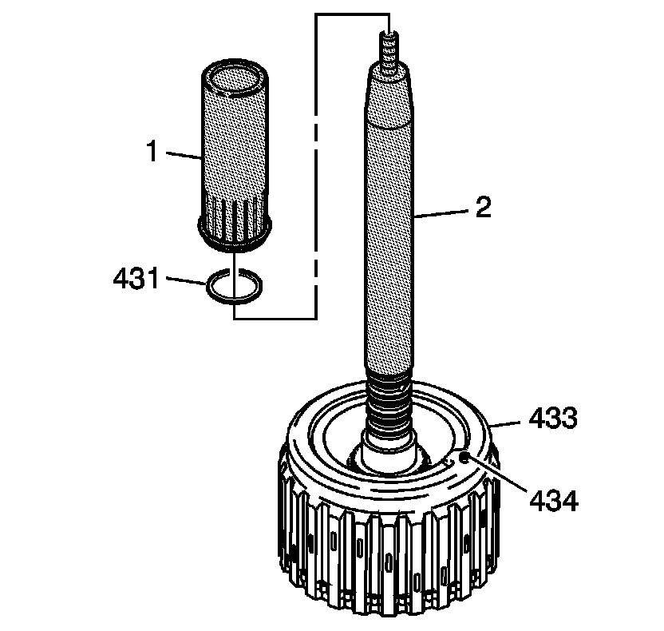
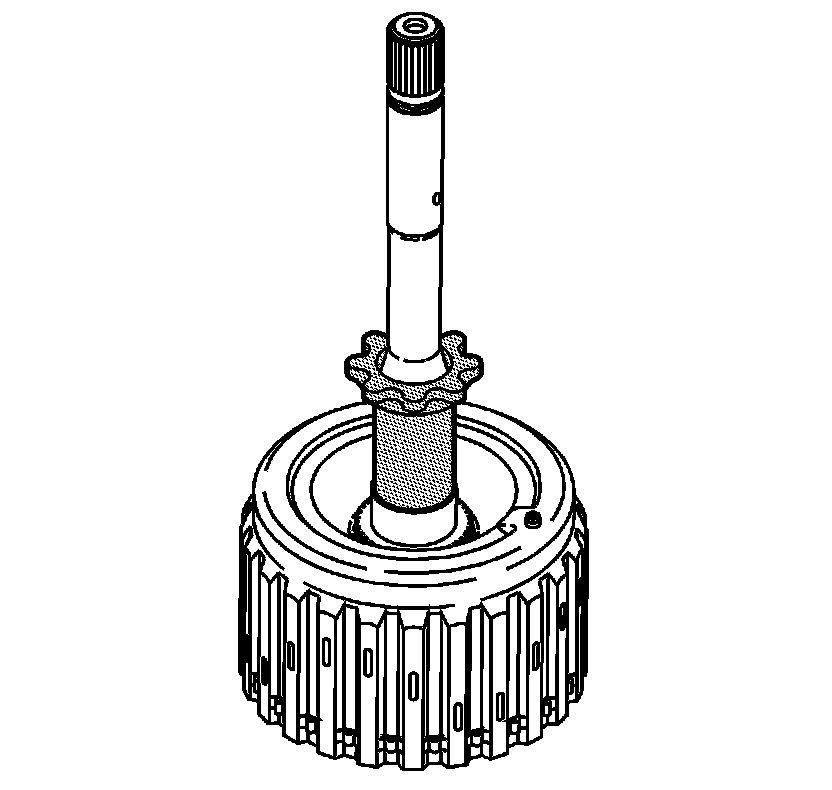
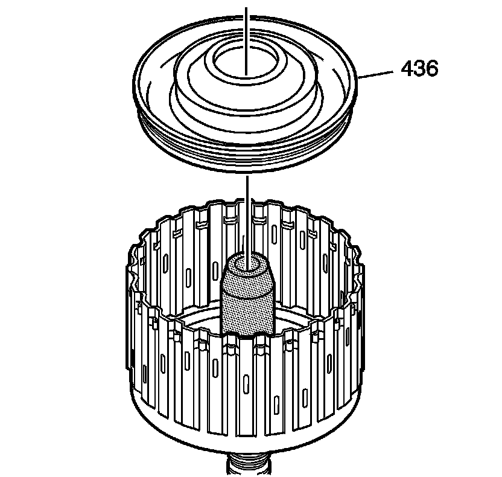
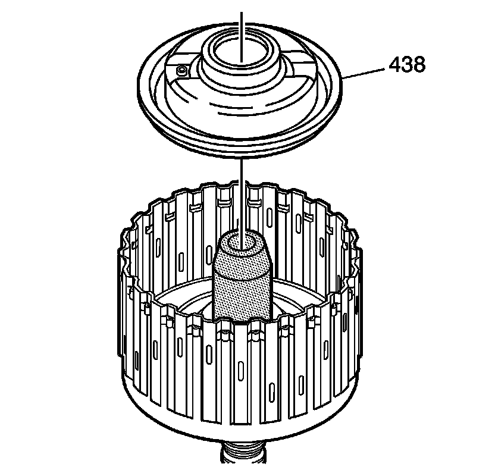
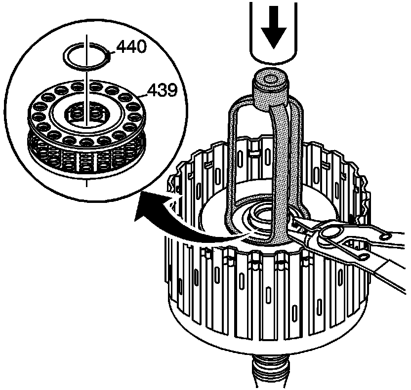
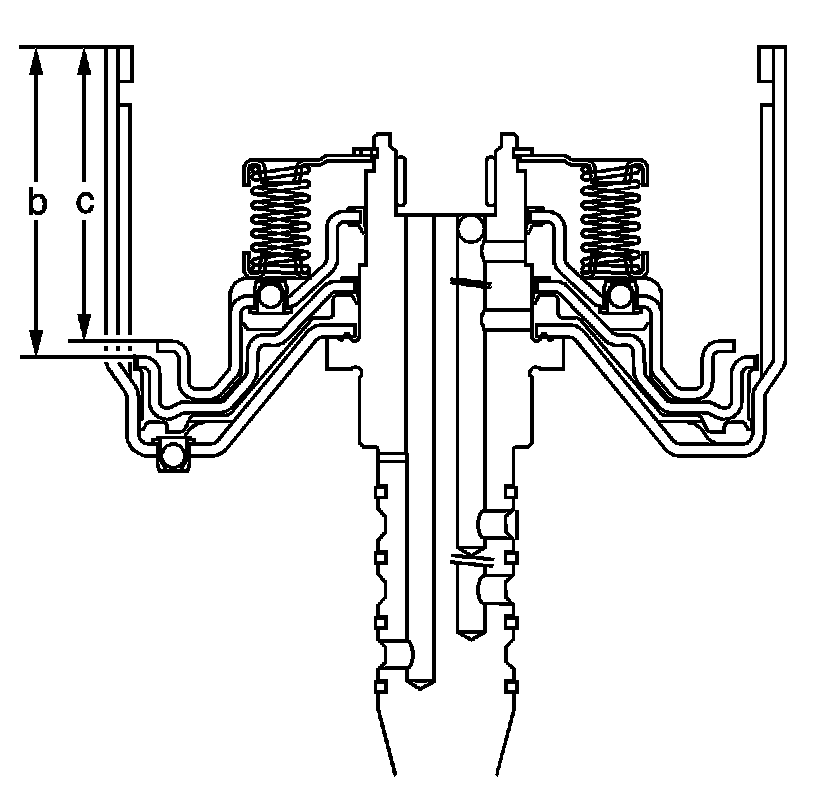
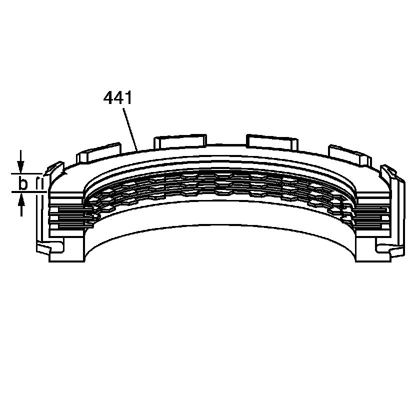
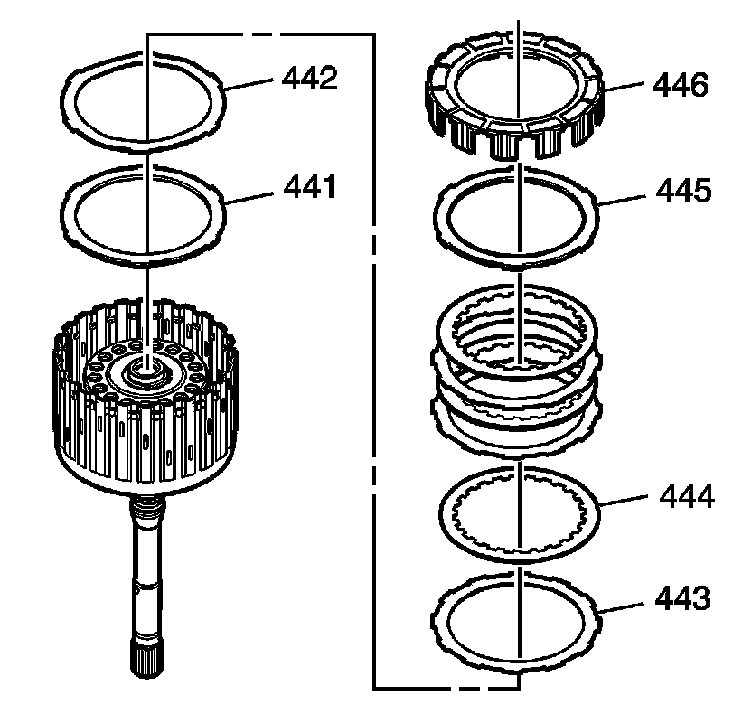
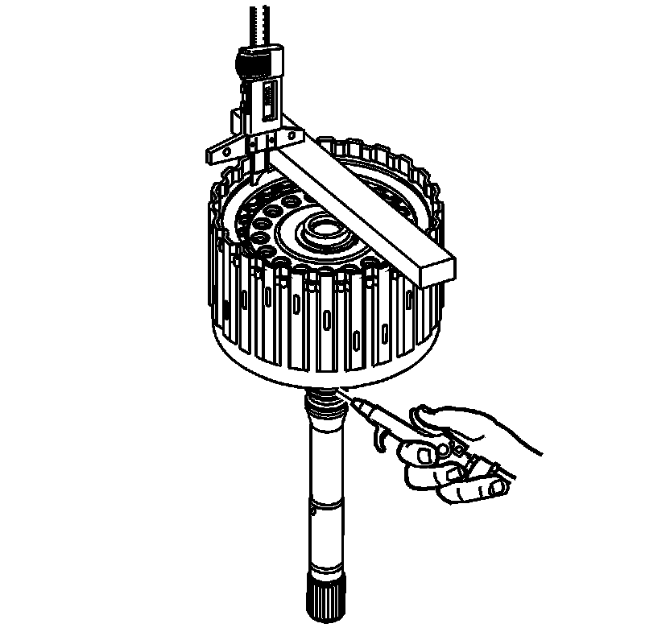

Forward and Coast Clutch Assemble
Forward and Coast Clutch Assemble
Tools Required
* J 43074 Forward Clutch Piston Spring Compressor
* J 45130-1 Seal Installer Sizer
* J 45130-2 Seal Installer Pusher
* J 45130-3 Seal Protector
* J 45132 Seal Protector
* J 45134 Seal Protector

1. Inspect the forward clutch housing (433) for the following:
* Plugged feed passages
* Damaged ball check valve (434)
* Worn or damaged splines
* Seal ring groove nicks or burrs
* Cracked or blocked fluid passages in the input shaft
* Worn or damaged clutch plates
2. Inspect the input shaft fluid seals (431, 432) for worn or damaged seals.
3. Slide J 45130-3 (2) over the input shaft, and position J 45130-3 (2) at the seal groove closest to the housing. Coat J 45130-3 (2) with transmission fluid.
4. Guide a NEW seal (431) onto J 45130-3 (2) and slide the seal into the groove with J 45130-2 (1).

5. Remove J 45130-3 (2).
6. Install the input shaft fluid seals (432).

7. Size the seals (431, 432) with J 45130-1 .
8. Leave J 45130-1 in place for at least five minutes. If possible, leave J 45130-1 in place until you install the assembly into the transmission case.

9. Inspect the forward piston and the coast clutch piston for the following:
* Cracks or damage to seal grooves
* Wear on the piston
* Worn or damaged clutch plates
10. Use J 45134 to install the forward clutch piston (436).

11. Use J 45132 to install the coast clutch piston (438).

12. Inspect the forward and coast clutch piston spring for the following:
* Damaged cage
* Distorted or missing springs
13. Install the piston spring (439).
14. Use J 43074 to compress the spring and install the retainer ring (440).

15. Measure the distance from the top of the forward clutch housing to the coast clutch piston (438), record this as dimension C.
16. Measure the distance from the top of the forward clutch housing to the forward clutch piston (436), record this as dimension B.
17. Subtract dimension C from dimension B. This is now dimension A.

18. Install the coast clutch backing plate (445) into the coast clutch housing (446).
19. Install the coast clutch plates into the coast clutch housing (446). Starting with the coast clutch plate (444) with inner splines. Alternating with the coast clutch plate (443) with outer splines. Refer to Clutch Plate Selection Specifications (Clutch Plate Selection Specifications) .
20. Install the coast clutch apply plate into the coast clutch housing (446).
21. Install the coast clutch spacer plate (441) into the coast clutch housing (446).
22. Measure the distance from the top of the coast clutch housing (446) to the top of the coast clutch spacer plate (441), record this as dimension B.
23. Subtract dimension B from dimension A, this is clutch pack travel.

24. Install the coast clutch spacer plate (441).
25. Install the coast clutch apply plate (442).
26. Install the coast clutch plates. Starting with the coast clutch plate (443) with the outer splines. Refer to Clutch Plate Selection Specifications (Clutch Plate Selection Specifications) .
27. Alternating with the coast clutch plate (444) with inner splines.
28. Install the coast clutch backing plate (444).
29. Install the coast clutch housing (446).

30. Install the forward clutch apply plate (447).
31. Install the forward clutch plates. Starting with the forward clutch plate (448) with outer splines. Alternating with the forward clutch plate (449) with inner splines. Refer to Clutch Plate Selection Specifications (Clutch Plate Selection Specifications) .
32. Install the forward clutch backing plate (450).
33. Install the forward clutch backing plate retainer ring (451).

34. Measure the distance between the forward clutch backing plate and the bottom of the gage bar. Measure three times in different locations on the backing plate. Record this as H1.
35. Apply air pressure to the specified port. Measure the distance between the forward clutch backing plate and the bottom of the gage bar. Measure three times in different locations on the backing plate. Record this as H2.
36. Subtract H2 from H1 this is the clutch pack travel. Refer to Clutch Piston Travel Specifications (Clutch Piston Travel Specifications) .
37. At this time you do not install the forward and coast clutch assembly into the transmission case. Set aside until told to do so.